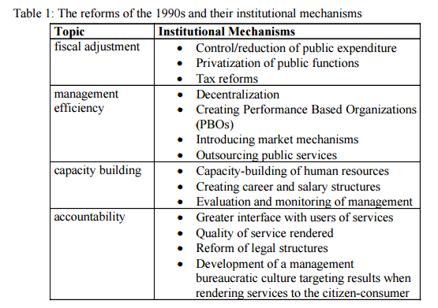

Management
Use of management tools in PA
Use of management tools in PA
3 stages:
Presently, the main relevant regulations on performance appraisal in Brazil’s public organizations are the Federal Constitution, the Law 8,112 of 1990, Law 11,784 of 2008, Law 11,907 of 2009 and the Decree 7,133 of 2010.
The 1988’s Federal Constitution guarantees employment stability to public servants as a way of ensuring them autonomy regarding political 13 decisions. But it states PA as the main criterion to the acquisition of this stability, after 3 years of probation, and insufficient results on PA as a condition for loss of job when already stable.
Law 8,112 establishes the assessment criteria for the probationary period: assiduity, discipline, capacity for initiative, productivity, and responsibility.
Laws 11,784 and 11,907 have instituted score-based performance monthly bonuses to several careers, so-called “performance-related pay”, and linked its payment to the individual and organizational appraisal. Each bonuses score is related to a monetary value determined to each career, limited to 100 score points, of which 20% are related to individual performance and 80% are related to institutional performance.
The variable compensation system is used for most categories, and the total possible variable amount varies across categories. These laws 11,784 and 11,907 also stipulate specific rules for progression and promotion in every career, and general rules for all, as the annual cycle of assessment, the need for agreed individual and institutional targets, and evaluation by their own and by other members of staff, complementary to assessment of immediate superior, in the composition of the individual parcel of bonuses. It also provides that the assessment should be followed by feedback to the servant and that servant with low performance should be trained to improve performance.
Decree 7,133 regulates the appraisal of servants, and determines that individual performance evaluation will be based on criteria and factors that reflect the skills of the employees, performance measured during individual 14 tasks and activities assigned to them. The individual assessment is based on fulfillment of tasks and activities in pre-established work plans, in addition to the minimum factors:
Thus, the Performance Appraisal is bounded within the federal public service performance management in annual cycles, that begins with the agreed institutional and individual targets, entailing periodic monitoring of the individual, and ending with the assessment of the fulfillment of these targets, beyond performance of the minimum behavior factors during the cycle.
Expenditure on public administration, as well as to foster budgetary balances. From the fiscal adjustment perspective, the construction of a new role for the state was associated with processes of fiscal balance, reducing the size of the public service, privatizing public functions.
Table 1 presents the institutional mechanisms used by the reforms:
The organizational learning by public institutions about its activities, the decision taking on the continuity or not of the programs, and the transparency, quality and accountability in the public resources management (managers’ responsibility for implemented decisions and actions)
Modern Public Management advocates the application of classical managerial principles and instruments (from Fayol and Taylor) in the organization of public administration, such as a clear analytical distinction between politics and administration, resulting in a practical and physical separation between the process of political decision making (by Cabinet, Ministries and Parliament) and the administrative implementation of these decisions (concentrated in agencies, placed at a certain distance from the Ministries) (Mierlo, 1996). These and other measures as proposed by this movement emphasize not external control on bureaucracy, but 'internal control': separation between politics and administration implies at the same time a stronger control of the bureaucracy by the political authorities. But, efforts to improve internal as well as external control of the bureaucracy by politics have more less failed thus far and have resulted in much less success than modern theories of public administration have predicted, says Mierlo (1996).
Priorities: the reduction of public spending, deficit and debt, a reversal of the serious decline in public trust in government, and the need to modernize and streamline public service management in the new era of global competition. The resulting changes in public management, shifted public sector organization from its traditional, classical bureaucratic model (hierarchy, control, rule-based and cautious) to a postbureaucratic model, involving innovation, flexibility, less central control, empowerment, competition, continuous learning and quality service and results oriented focus. Thus, a new form of public management has been evolving over the last two decades. Its emphasis on increased flexibility, enhanced responsiveness and careful management of resources and 21 programs requires that public servants, both managers and staff, be prepared to demonstrate the basic skills of risk-taking, innovation, and creative planning. It amounts to a transformation of the public sector, one that has been supported more enthusiastically by some than by others.
| Name of Program | Year | Goals | Participants | Indicators | Budget ($) | |
| Health | Farmacia Popular since 2004 | increase the population's access to medicines, which are considered essential for the treatment of diseases with a high incidence in Brazil | the entire population, especially those who have difficulty in maintaining health treatment due to high drug prices, and generally do not seek the help of the Unified Health System (SUS) | actual prices on listed medicines presence of free pills from the list |
563 335 312.28 |
| Education | Novos talentos 2010 |
|
school teachers and students | ||
| Social welfare | Bolsa Família 2003 - our days |
|
|
|
$10 billion - in 2013 (0.46% of Brazil’s GDP) |